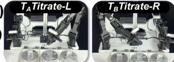
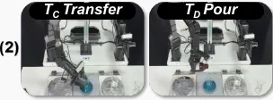
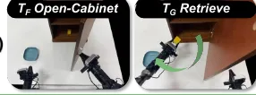

Define the units
Ground the instruction in an ordered sequence of canonical MUs, with local goals and observable outcome criteria.
Instruction-grounded recordsMetaMani
A Manipulation-Unit Framework for
Compositional Long-Horizon Robot Tasks
Build longer robot behaviors from reusable operations. Verify each step. Recover locally. Keep moving forward.
A robot should reuse what it knows, even when the task order changes.
When a local operation fails, a complete trajectory can unravel. MetaMani gives each operation an explicit goal, initiation condition, and observable outcome criteria, creating boundaries for verification and recovery.
Inside the framework ↗Local failure can disrupt the remaining sequence.
Preserve verified work. Recover at the failed operation.
Real-world task success
98 / 120 trials · heterogeneous dispatchGain with a fixed checkpoint
25.8% → 70.8% · flat vs. MetaMani single-policyNew target-task demonstrations
For evaluated reordered compositionsLong-horizon robot manipulation is often learned and executed as complete trajectories. This binds reusable operations to fixed task orders, requires new demonstrations when familiar operations are reordered, and allows local failures to disrupt subsequent execution. Existing task-level policies and planners often lack executor-independent boundaries at which completed progress can be preserved and failed operations can be retried with alternative policies. We introduce MetaMani, a framework that organizes learning and execution around reusable manipulation units. Each unit specifies a local goal, an initiation condition, and observable success and failure criteria, while independently trained policies determine how to realize the intended state change. MetaMani selects compatible policies based on reliability estimates, verifies outcomes at unit boundaries, and retries locally or switches policies without replaying completed work. This enables checkpoint reuse across reordered task compositions without joint training or additional task-level demonstrations. Across RoboCasa365, RoboTwin 2.0, and real-world tasks, MetaMani improves long-horizon completion. With a fixed low-level checkpoint, its single-policy configuration increases successful real-robot trials from 31/120 to 85/120. Heterogeneous per-MU dispatch reaches 98 of 120 (81.7%). These results demonstrate the effectiveness of organizing long-horizon manipulation around reusable and verifiable operations.
The operation defines what should change. The policy determines how.
Ground the instruction in an ordered sequence of canonical MUs, with local goals and observable outcome criteria.
Instruction-grounded recordsFilter independently trained policies by compatible capabilities and observation/action interfaces.
Frozen capability registrySelect the eligible policy with the highest calibrated success rate. Preserve its native model interface.
Capability-aware adaptationCheck visual outcomes. Advance after success; retry or switch policies after failure, from the current state.
Verified boundariesExplore an illustrative execution trace. This schematic explains the mechanism; it is not a robot rollout or measured timing.
Ready to execute. Choose a scenario and play the trace.
0 / 3 verifiedEvaluated in simulation and on a bimanual AgileX Mobile ALOHA platform.
Six task settings across chemistry-lab and household scenarios, with 20 matched initial conditions per setting.
Flat-Single and MetaMani-Single share the same MU-trained checkpoint. The heterogeneous system uses a four-policy pool. Source: Figure 3 and real-world results.
Task success across the same 120 matched real-world trials per variant.
Attempt caps differ by mechanism. Combined recovery averages 1.38 attempts per MU and 1.52× the execution time of Verified-Stop. Table 3.
27 / 40 successful trials in reordered target compositions, matching aggregate source performance, with no new target-task demonstrations or checkpoint updates.
| Method | Overall | Atomic-Seen | Composite-Seen | Composite-Unseen |
|---|---|---|---|---|
| π₀.₅ | 16.9 | 39.6 | 7.1 | 1.2 |
| RLDX-1 | 36.0 | 67.6 | 27.9 | 8.5 |
| ABot-M0.5 | 40.3 | 75.6 | 37.7 | 3.3 |
| MetaMani-π₀.₅ | 28.1 | 55.2 | 19.8 | 6.1 |
| MetaMani-RLDX-1 | 48.0 | 78.9 | 44.3 | 16.8 |
| MetaMani | 55.6 | 85.1 | 52.7 | 25.2 |
| Method | Easy | Hard |
|---|---|---|
| ACT | 89.6 | 0.0 |
| DP3 | 81.0 | 17.0 |
| π₀.₅ | 84.9 | 27.9 |
| VLA-Adapter | 56.5 | 5.1 |
| MetaMani-ACT | 93.6 | 25.0 |
| MetaMani-DP3 | 85.6 | 25.0 |
| MetaMani-π₀.₅ | 87.9 | 31.8 |
| MetaMani-VLA-Adapter | 61.0 | 9.1 |
| MetaMani | 94.6 | 41.3 |
Selected RoboCasa365 baselines are shown. See the paper for the complete comparison and evaluation protocols.
Real robot tasks built from recurring manipulation units.

PAPER STILLRecompose left and right titration units to change the operation order.
Reserved for a real robot demonstration.
PAPER STILLCompose a longer procedure while retaining verified progress at each boundary.
Reserved for a real robot demonstration.
PAPER STILLOpen, retrieve, and place objects with reusable bimanual operations.
Reserved for a real robot demonstration.MetaMani uses a fixed MU vocabulary, a calibrated capability registry, and visually verifiable outcomes. Consecutive units share the same physical environment; their dynamics are not assumed to be independent.
Read the full formulation, experiments, and recovery analysis.
@misc{metamani,
title = {MetaMani: A Manipulation-Unit
Framework for Compositional
Long-Horizon Robot Tasks},
howpublished = {Project webpage},
url = {https://Xuann26.github.io/MetaMani/}
}Author and publication metadata are not provided in the supplied manuscript. This draft will be updated with the official citation.